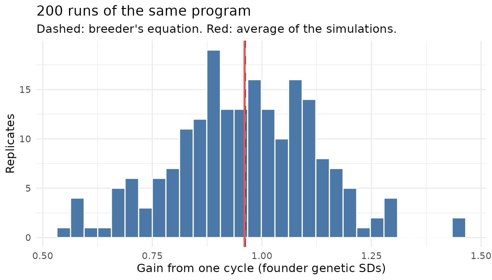
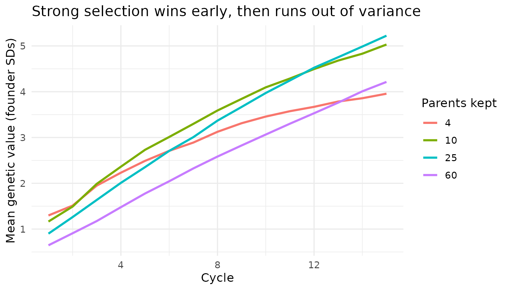
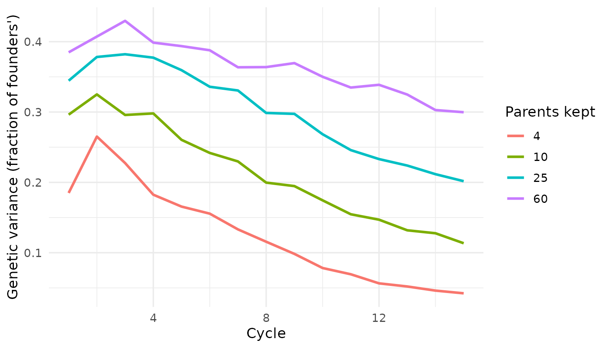

Breeders make design decisions all the time. How many lines should go to the advanced trial? How many parents should be recycled? Is a second location worth more than a second rep? Quantitative genetics gives formulas for some of these questions, and field data answer others after many years. Simulation fills the gap. You build a model of your program on the computer, run it many times, and look at what tends to happen.
This article is for readers who have never run a breeding simulation. It uses AlphaSimR to simulate the genetics and tidyagsim to organize the experiment. By the end you will have checked a simulation against the breeder’s equation and watched it answer a question the equation cannot.
One cycle of selection
Start with the simplest breeding program there is. Grow 200 inbred
lines and measure them, keep the best n_select, intermate
those lines, and look at the offspring. In AlphaSimR that is three
function calls. tidyagsim wraps them in alphasim_program(),
which turns the script into a simulation spec, a recipe
tidyagsim can run as many times as you like:
recurrent <- alphasim_program(
function(founders, SP, n_select, cycles) {
tracker <- asr_tracker(founders) # remembers where we started
pop <- founders
for (cycle in seq_len(cycles)) {
pop <- setPheno(pop) # grow and measure every plant
parents <- selectInd(pop, n_select) # keep the best n_select
pop <- randCross(parents, nCrosses = 200) # intermate them: 200 offspring
tracker$record(pop, year = cycle, cost = 200 * 15)
}
asr_summary(tracker) # gain, variance, cost, ...
},
n_select = 20, cycles = 1,
founders = asr_founders(n_founders = 200, n_chr = 10, seg_sites = 100, plot_h2 = 0.3)
)
recurrent
#> alphasim_program simulation spec (engine: AlphaSimR)
#>
#> Fixed arguments:
#> n_select = 20
#> cycles = 1The function describes one replicate, a single run
of the program from new founders. asr_founders() describes
those founders: 200 inbred lines, a trait controlled by many QTL, and a
single-plot heritability of 0.3. Genetic values are reported in units of
the founders’ genetic standard deviation (SD). A gain of 1 means the
offspring are one founder genetic SD better than the founders.
Run it once, then run it 200 times
fit_resamples() runs a spec on a set of replicates. Each
replicate gets its own random seed, and so its own founders and its own
luck:
one <- fit_resamples(recurrent, sim_replicates(1))
collect_metrics(one)
#> # A tibble: 4 × 6
#> .metric direction mean n std_err .config
#> <chr> <chr> <dbl> <int> <dbl> <chr>
#> 1 release_gain maximize 0.924 1 NA Config001
#> 2 gain_per_year maximize 0.924 1 NA Config001
#> 3 genetic_variance maximize 0.291 1 NA Config001
#> 4 cost minimize 3000 1 NA Config001That number is one draw. Run it again with a different seed and you will get a different answer. To see how much it varies, run 200 replicates:
many <- fit_resamples(recurrent, sim_replicates(200, seed = 1))
gains <- collect_metrics(many, summarize = FALSE)The breeder’s equation predicts the response to one cycle of truncation selection: R = i h² σP, or i h in genetic SDs. Here i is the selection intensity for keeping 20 of 200 and h² is 0.3:
ggplot(gains, aes(release_gain)) +
geom_histogram(bins = 30, fill = "#4C78A8", colour = "white") +
geom_vline(xintercept = predicted, linetype = 2, linewidth = 1) +
geom_vline(xintercept = mean(gains$release_gain), colour = "#E45756", linewidth = 1) +
labs(x = "Gain from one cycle (founder genetic SDs)", y = "Replicates",
title = "200 runs of the same program",
subtitle = "Dashed: breeder's equation. Red: average of the simulations.")
Two lessons are in this picture:
- The simulation agrees with theory. On average it lands where the breeder’s equation says it should. A simulation is a model you can check.
- Any single run can mislead. Individual runs range from 0.55 to 1.45, so one run could suggest this design is half as good, or half again better, than it really is. One simulation is like one field trial at one location: an anecdote, not an answer. tidyagsim always runs many replicates and reports the average with its Monte Carlo standard error, the uncertainty that comes from running only a finite number of replicates.
collect_metrics(many)
#> # A tibble: 4 × 6
#> .metric direction mean n std_err .config
#> <chr> <chr> <dbl> <int> <dbl> <chr>
#> 1 release_gain maximize 0.961 200 0.0116 Config001
#> 2 gain_per_year maximize 0.961 200 0.0116 Config001
#> 3 genetic_variance maximize 0.348 200 0.00759 Config001
#> 4 cost minimize 3000 200 0 Config001A question the formula can’t answer
The breeder’s equation describes one generation. Over many cycles,
selection uses up genetic variance and small parent pools drift, so the
best one-cycle choice is not always the best long-term choice. Let’s
mark n_select with tune(), which says “try
several values of this”, and follow the program for 15 cycles:
long <- set_args(recurrent, n_select = tune(), cycles = 15)
long_res <- tune_grid(
long,
resamples = sim_replicates(30, seed = 1),
grid = data.frame(n_select = c(4, 10, 25, 60)),
control = control_sim(save_outcomes = TRUE)
)tune_grid() ran every value of n_select on
the same 30 seeds, so every design started from the same 30 sets of
founders. collect_trajectories() gathers the yearly
records:
traj <- collect_trajectories(long_res)
avg <- aggregate(cbind(mean, genetic_variance) ~ n_select + year, data = traj, FUN = mean)
ggplot(avg, aes(year, mean, colour = factor(n_select))) +
geom_line(linewidth = 1) +
labs(x = "Cycle", y = "Mean genetic value (founder SDs)", colour = "Parents kept",
title = "Strong selection wins early, then runs out of variance")
ggplot(avg, aes(year, genetic_variance, colour = factor(n_select))) +
geom_line(linewidth = 1) +
labs(x = "Cycle", y = "Genetic variance (fraction of founders')", colour = "Parents kept")
Keeping only 4 parents is level with the leaders for the first two cycles, then falls behind as the genetic variance it needs runs out. Keeping 10 leads for most of the run, and keeping 25 catches it by cycle 12 because it still has variance to work with. Keeping 60 selects too weakly to keep up. Which design is “best” depends on how long your horizon is. The breeder’s equation cannot show this trade-off, and a field experiment would take decades. The simulation took seconds.
What you used
| Term | Meaning here |
|---|---|
| spec | the recipe: an AlphaSimR script plus its settings
(alphasim_program()) |
| replicate | one run of the spec from new founders, set by a seed
(sim_replicates()) |
| design | one combination of the settings you are choosing between
(n_select = 10) |
tune() |
“try several values of this setting” |
| metric | a number each replicate reports, such as
release_gain
|
| Monte Carlo SE | how much the average would move if you reran with new seeds |
Next, How many replicates do I need? shows how to choose the number of replicates, and why running every design on the same seeds matters so much.